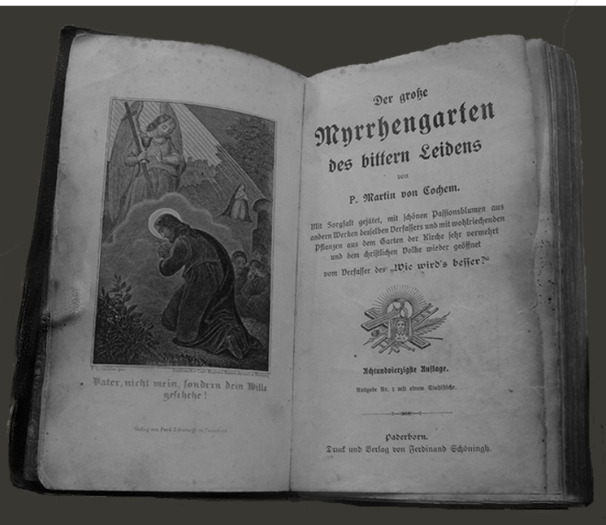
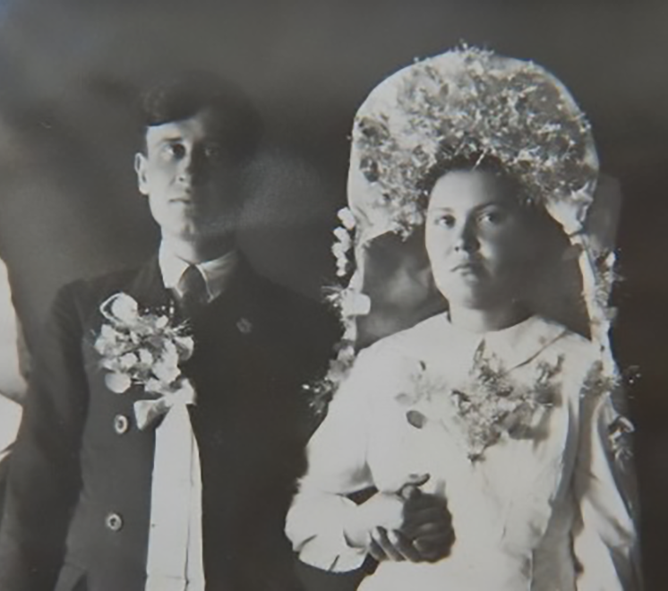

∙ ПОВСЕДНЕВНОСТЬ ∙
ЯЗЫК
Отличие немцев от других категорий спецпереселенцев состояло в том, что взрослое население не говорило по-русски. Немецкий язык был основным в АССР Немцев Поволжья – на нем выходили газеты, велось обучение в школах. Закарпатские немцы, ставшие гражданами СССР только в 1940 году после присоединения Бессарабии и Северной Буковины – бывших румынских территорий, естественно, также не говорили по-русски. Попав на территории Ханты-Мансийского национального округа, они были вынуждены перейти на русский язык, но многие из них до самой старости говорили с немецким акцентом. Дети же, наоборот, очень быстро освоились и забыли родной немецкий язык.Языковой вопрос усугублял положение немцев – советских граждан – во время войны против фашистской Германии, поскольку часто местное население думало, что завезли именно военнопленных. Но, как вспоминают депортированные, их принимали очень быстро и особых конфликтов не возникало, когда становилось ясно, что это другие немцы – советские.
ПЕСНЯ ПРО ДЕПОРТАЦИЮ
ТРАДИЦИИ
-
Депортированные немцы старались сохранять свои традиции: подпольно проводили религиозные службы и так же подпольно праздновали католическое Рождество и Пасху.
-

Старались проводить свадьбы по немецким обрядам.
-
Пожалуй, лучше всего преемственность традиций отразилась в кухне российских немцев. Даже сегодня многие продолжают готовить блюда по рецептам своих бабушек – пирог «кухен», кребли («хворост»), шниттзуппе (сладкий суп из сухофруктов с клецками) и др.